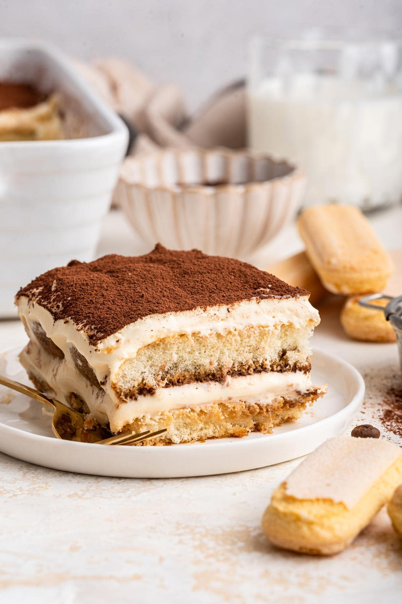

Tiramisu
Tiramisu is a classic Italian dessert made with layers of coffee-soaked ladyfingers, creamy mascarpone filling, and a dusting of rich cocoa powder. Light yet indulgent, it perfectly balances bold coffee flavors with smooth, sweet cream in every bite ☕🍰
Ingredients
- Ladyfinger biscuits (savoiardi)
- Mascarpone cheese
- Eggs
- Sugar
- Strong brewed coffee (cooled)
- Cocoa powder
- Vanilla extract
- Coffee liqueur (optional)
Steps:
- Brew strong coffee and let it cool.
- Whisk eggs and sugar until creamy; mix in mascarpone and vanilla.
- Dip ladyfingers briefly in coffee.
- Layer biscuits and cream mixture in a dish.
- Repeat layers and chill.
- Dust with cocoa powder before serving.